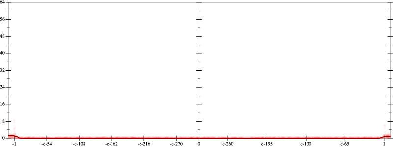
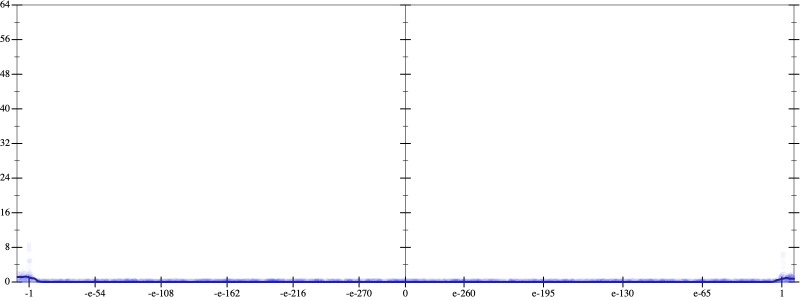
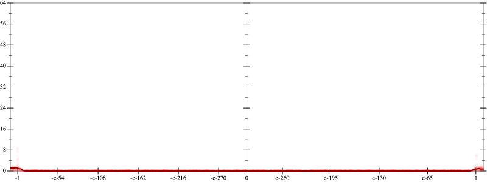
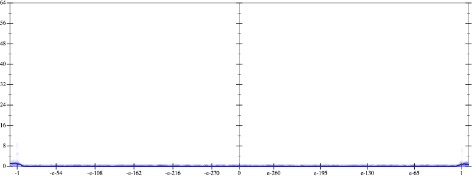
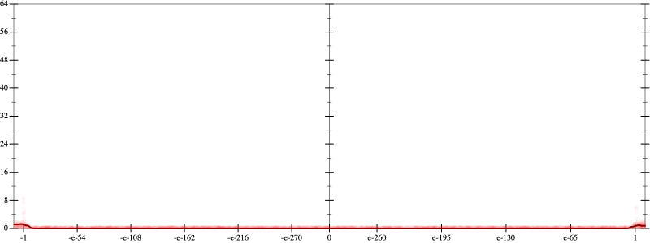
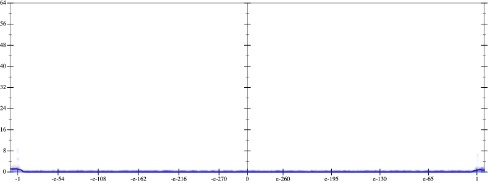

Error
 
Bits error versus x
Bits error versus x
Results
Initial program 0.0
Time bar (total: 56.7s)Debug log
herbie shell --seed 807425473
(FPCore (x)
:name "14"
:pre (and (>= x -10000000000.0) (<= x 10000000000.0))
(+ (+ (+ (+ (+ (+ (+ -17297280.0 (* 242161920.0 (* x x))) (* -484323840.0 (* (* (* x x) x) x))) (* 322882560.0 (* (* (* (* (* x x) x) x) x) x))) (* -92252160.0 (* (* (* (* (* (* (* x x) x) x) x) x) x) x))) (* 12300288.0 (* (* (* (* (* (* (* (* (* x x) x) x) x) x) x) x) x) x))) (* -745472.0 (* (* (* (* (* (* (* (* (* (* (* x x) x) x) x) x) x) x) x) x) x) x))) (* 16384.0 (* (* (* (* (* (* (* (* (* (* (* (* (* x x) x) x) x) x) x) x) x) x) x) x) x) x))))